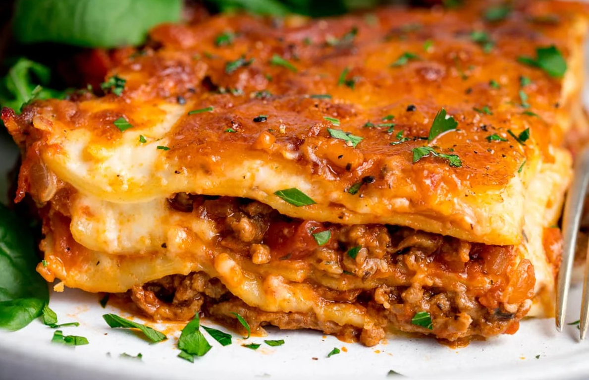

L a s a g n e
Creamy Goodness
Home

i n g r e d i e n t s
the ragu:
- 2 Tbsp of Olive Oil
- 900g of Minced Beef
- 2 Large Onions
- 2 Sticks of Celery
- 2 Cloves of Garlic
- 2 Tbsp of Plain of
All
Purpose Flour
- 150ml of Beef Stock
- 1 Tsp of Caster Sugar
- 3 Tbsp of Tomato Puree
- 1 Tbsp of Chopped
Thyme
- 2 Cans of Chopped
Tomatoes
the bechamel:
- 50g of Butter
- 50g of Plain or
All Purpose
Flour
- 750ml of Milk
the lasagne:
- Lasagne Sheets
- Cheddar Cheese
m e t h o d
- Heat a large frying pan until hot and add the
oil.
- Cook the mince until until beef is fully
cooked and
slightly crisp.
- Remove from heat, cover and keep it warm.
- In that same pan, add some chopped onion, celery, and
garlic and cook until softened.
- Before returning the meat, add some tomato puree and
thyme to the softened onion and stir.
- Combine the meat and stock to the frying pan.
- Add some sugar to the meat and stir in the canned
tomatoes and bring to a boil.
- Once boiling, bring the heat down to a simmer.
- For the bechamel, melt butter in a saucepan.
- Add flour and cook over the heat for one minute.
- Gradually pour in some milk and whisk until fully
combined.
- Once thickened, add salt and pepper to taste.
- Preheat the oven to 200C/ 400F/ Gas 6.
- For the lasagne, layer the ragu, pasta sheets, bechamel,
and cheese leaving the last layer as bechamel.
- Cover the dish with aluminum and cook in the middle of
the oven for 45 minutes.
- When the pasta sheets are soft, take it out and top with
cheese.
- Return to the oven until the cheese is golden and browned.
- Once cooked, allow to cool and then enjoy!
Here is the recipe that inspired this:
Home